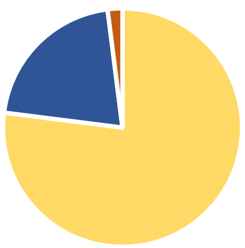

NITROGEN
is essential to all living things on Earth. It is the 4th most abundant element in the human body, needed to make PROTEINS. We get nitrogen from eating plants, which they get from the soil. However, for every harvest, the nitrogen from the soil is depleted. This ultimately leads tolower crop yields.
A guano island in Mexico, Isla Roca Partida
For a long time, people heavily relied on bird poop GUANO for nitrogen. This was rare and expensive; but more importantly, the supply of it was already running out by 1870s. Another method was needed to be done to get more nitrogen otherwise people around the globe will be dying of starvation.

Nitrogen 78%
Oxygen 21%
Other gases 1%
78%
of the Earth's atmosphere is nitrogen. There's a lot of nitrogen to go around, so what's the problem then? Well, it's in its UNUSABLE form. Nitrogen gas is composed of two TRIPLE-BONDED nitrogen atoms. Breaking this bond would take a massive amount of energy.
This is where chemists needed to step up. For years, many chemists tried and failed. That is, until
Fritz Haber
managed to makeAmmonia
(NH3), a compound also found on bird poop, after working tirelessly on the problem for 5 years. His idea was to combine nitrogen gas (N2) and hydrogen gas (H2) inextreme pressure and extreme temperature
. To do this, new technology were made that can withstand such heat and pressure.
The Haber Process
Thanks to Haber's discovery, harvest yields grew EXPONENTIALLY. Billions more of people on Earth can now be supported. This is arguably one of the most important discoveries in the history. He received a Nobel Prize for chemistry in 1918.
World Population Chart
Happy Ending?